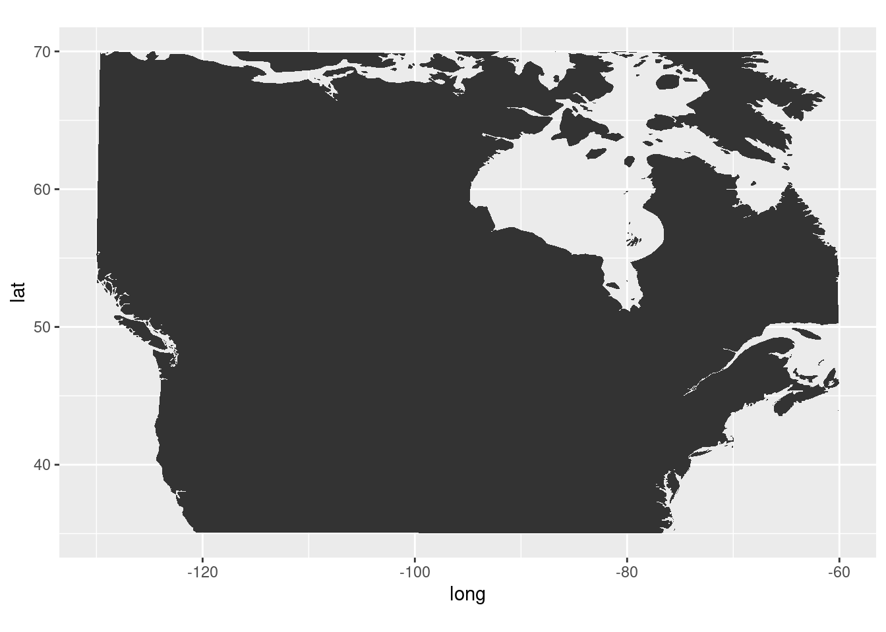

![]()
library(tibble)
library(dplyr)
library(gganimate)
library(extrafont)
library(ggtext)
residence = tribble(
~city, ~state, ~lat, ~long, ~years, ~description, ~dates,
"Brandon", "MB", 49.8485, -99.9501, 2.5, "Born", "1979-1982",
"Lahr", "Baden-Württemberg", 48.3392, 7.8781, 6, "Childhood", "1982-1988",
"Oromocto", "NB", 45.8487, -66.4813, 4, "Childhood", "1988-1992",
"Victoria", "BC", 48.4284, -123.3656, 1, "Childhood", "1992-1993",
"Burton", "NB", 45.8752, -66.3611, 9, "Childhood<br>Undergrad at UNB", "1993-2002",
"Fredericton", "NB", 45.9636, -66.6431, 2, "Masters at UNB", "2002-2004",
"Halifax", "NS", 44.6488, -63.5752, 5, "PhD at Dalhousie", "2004-2009",
"Louisville", "KY", 38.2527, -85.7585, 2, "PostDoc at UofL", "2010-2012",
"Lexington", "KY", 38.0406, -84.5037, 9, "PostDoc at UK<br>Research Associate at UK", "2012-2021"
)I thought the recent animated map at Piping Hot Data {Pileggi (2021)} was a really neat way to demonstrate where someone has lived and what their various experiences may have been (while acknowledging that we are also more than the sum of where we have lived of course), so I thought I would take a go at creating my own, which includes stints in various parts of Canada, a stint in Germany, as well as two moves within Kentucky.
I’ll start by getting all of the locations, as well as my time at each one. I had to add the year dates so I could get the number of years correct, as my initial try I was missing 6 years. Now I’m only missing 1.5, which isn’t bad if we are using years as our unit of time.
I created a function from Shannon’s original code because I end up using it twice, and I was missing all of the variables I needed to change to make it work properly.
create_connections = function(residence){
residence_connections_prelim = residence %>%
mutate(
# need this to create transition state ----
city_order = row_number() + 1,
# where I moved to next, for curved arrows ----
lat_next = lead(lat),
long_next = lead(long),
# label to show in plot, styled using ggtext ---
label = glue::glue("**{city}, {state}** ({years} yrs)<br>*{description}*"),
# label of next location ----
label_next = lead(label)
)
n_entry = nrow(residence_connections_prelim)
residence_connections = residence_connections_prelim %>%
# get first row of residence ----
slice(1) %>%
# manually modify for plotting ----
mutate(
city_order = 1,
label_next = label,
lat_next = lat,
long_next = long,
) %>%
# combine with all other residences ----
bind_rows(residence_connections_prelim) %>%
# last (9th) row irrelevant ----
slice_head(n = n_entry) %>%
# keep what we neeed ----
dplyr::select(city_order, lat, long, lat_next, long_next, label_next)
residence_connections
}world_data = ggplot2::map_data("world")
trim_world = world_data %>%
dplyr::filter(long >= -130 & long <= 20, lat >= 35, lat <= 70)
ggplot() + geom_polygon(data = trim_world, aes(x=long, y = lat, group = group)) +
coord_fixed(1.3)OK, at least that looks like the right region that I want to use. Basically from British Columbia to Germany, and the northern part of North America.
base_map = ggplot() +
# plot states ----
geom_polygon(
data = trim_world,
aes(
x = long,
y = lat,
group = group
),
fill = "#F2F2F2",
color = "white"
) +
# lines for pins ----
geom_segment(
data = residence,
aes(
x = long,
xend = long,
y = lat,
yend = lat + 0.5
),
color = "#181818",
size = 0.3
) +
# pin heads, a bit above actual location, color with R ladies lighter purple ----
geom_point(
data = residence,
aes(
x = long,
y = lat + 0.5
),
size = 0.5,
color = "#88398A"
) +
theme_void() +
coord_fixed(1.3)
base_mapres_connections = create_connections(residence)
n_res = nrow(res_connections)
anim = base_map +
# show arrows connecting residences ----
geom_curve(
# do not include 1st residence in arrows as no arrow is intended ----
# and inclusion messes up transition ---
data = res_connections %>% slice(-1),
# add slight adjustment to arrow positioning ----
aes(
y = lat - 0.1,
x = long,
yend = lat_next - 0.2,
xend = long_next,
# group is used to create the transition ----
group = seq_along(city_order)
),
color = "#181818",
curvature = -0.5,
arrow = arrow(length = unit(0.02, "npc")),
size = 0.2
) +
# add in labels for pins, with inward positioning ----
# show labels either top left or top right of pin ----
geom_richtext(
data = res_connections,
aes(
x = ifelse(long_next < -100, long_next + 1, long_next - 1),
y = lat_next + 5,
label = label_next,
vjust = "top",
hjust = ifelse(long_next < -100, 0, 1),
# group is used to create the transition ----
group = seq_along(city_order)
),
size = 2,
label.colour = "white",
# R ladies purple ----
color = "#562457",
# R ladies font used in xaringan theme ----
family = "Lato"
) +
# title determined by group value in transition ----
ggtitle(paste0("Home {closest_state} of ", n_res)) +
# create animation ----
transition_states(
city_order,
transition_length = 2,
state_length = 5
) +
# style title ----
theme(
plot.title = element_text(
color = "#562457",
family = "Permanent Marker",
size = 12
)
)
# render and save transition ----
# the default nframes 100 frames, 150 makes the gif a bit longer for readability ----
# changing dimensions for output w/ height & width ----
# increasing resolution with res ----
animate(anim, nframes = 150, height = 2, width = 3, units = "in", res = 150)anim_save("homes_animation.gif")That’s not bad! The only issue with it is that because of the crossing of the Atlantic Ocean, the travels within North America, especially the very close travels from NB to NS, and then within KY are way too crushed together.
So lets see what happens if we trim to the region of North America, and remove the overseas trip to Germany.
trim_world2 = world_data %>%
dplyr::filter(long >= -130 & long <= -60, lat >= 35, lat <= 70)
ggplot() + geom_polygon(data = trim_world2, aes(x=long, y = lat, group = group)) +
coord_fixed(1.3)
residence2 = residence %>%
dplyr::filter(!grepl("Lahr", city))
res_connections2 = create_connections(residence2)
n_res2 = nrow(res_connections2)
base_map2 = ggplot() +
# plot states ----
geom_polygon(
data = trim_world2,
aes(
x = long,
y = lat,
group = group
),
fill = "#F2F2F2",
color = "white"
) +
# lines for pins ----
geom_segment(
data = residence2,
aes(
x = long,
xend = long,
y = lat,
yend = lat + 0.5
),
color = "#181818",
size = 0.3
) +
# pin heads, a bit above actual location, color with R ladies lighter purple ----
geom_point(
data = residence2,
aes(
x = long,
y = lat + 0.5
),
size = 0.5,
color = "#88398A"
) +
theme_void() +
coord_fixed(1.3)
base_map2anim2 = base_map2 +
# show arrows connecting residences ----
geom_curve(
# do not include 1st residence in arrows as no arrow is intended ----
# and inclusion messes up transition ---
data = res_connections2 %>% slice(-1),
# add slight adjustment to arrow positioning ----
aes(
y = lat - 0.1,
x = long,
yend = lat_next - 0.2,
xend = long_next,
# group is used to create the transition ----
group = seq_along(city_order)
),
color = "#181818",
curvature = -0.5,
arrow = arrow(length = unit(0.02, "npc")),
size = 0.2
) +
# add in labels for pins, with inward positioning ----
# show labels either top left or top right of pin ----
geom_richtext(
data = res_connections2,
aes(
x = ifelse(long_next < -100, long_next + 1, long_next - 1),
y = lat_next + 5,
label = label_next,
vjust = "top",
hjust = ifelse(long_next < -100, 0, 1),
# group is used to create the transition ----
group = seq_along(city_order)
),
size = 2,
label.colour = "white",
# R ladies purple ----
color = "#562457",
# R ladies font used in xaringan theme ----
family = "Lato"
) +
# title determined by group value in transition ----
ggtitle(paste0("Home {closest_state} of ", n_res2)) +
# create animation ----
transition_states(
city_order,
transition_length = 2,
state_length = 5
) +
# style title ----
theme(
plot.title = element_text(
color = "#562457",
family = "Permanent Marker",
size = 12
)
)
# render and save transition ----
# the default nframes 100 frames, 150 makes the gif a bit longer for readability ----
# changing dimensions for output w/ height & width ----
# increasing resolution with res ----
animate(anim2, nframes = 150, height = 2, width = 3, units = "in", res = 150)anim_save("homes_animation2.gif")References
Pileggi, Shannon. 2021. “PIPING HOT DATA: GGanimating a Geographic Introduction.” https://www.pipinghotdata.com/posts/2021-02-15-gganimating-a-geographic-introduction/.
Reuse
Citation
BibTeX citation:
@online{mflight2021,
author = {Robert M Flight},
title = {My {Geographic} {Introduction}},
date = {2021-05-02},
url = {https://rmflight.github.io/posts/2021-05-02-animating-a-geographic-introduction},
langid = {en}
}
For attribution, please cite this work as:
Robert M Flight. 2021. “My Geographic Introduction.” May 2,
2021. https://rmflight.github.io/posts/2021-05-02-animating-a-geographic-introduction.